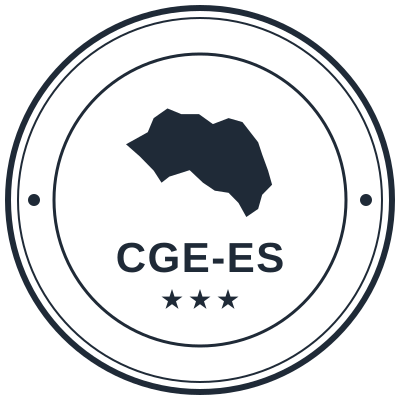

Mamadou Diallo
Ostenta la representación legal de la entidad, preside la Junta Directiva y firma los documentos oficiales.
Qué es, de dónde viene, quién lo dirige y con qué respaldo legal actúa.
El Consejo de Guineanos del Exterior nace de una decisión del Gobierno de la República de Guinea: dotar a su diáspora de una estructura estable en cada país donde hay comunidad guineana, en lugar de dejarla dispersa en asociaciones que no se hablan entre sí.
El CGE-ES es el capítulo español de esa estructura. No se autoproclamó: sus responsables fueron elegidos por votación de la comunidad guineana residente en España, y el resultado se formalizó en el acta fundacional de la entidad.
Esa doble condición —mandato de origen y elección por los propios interesados— es lo que nos permite hablar en nombre de la comunidad ante la Embajada, ante las autoridades guineanas y ante las administraciones españolas.
Por completar Añade aquí la referencia exacta de la orden o decreto del Gobierno de Guinea que crea el Consejo de Guineanos del Exterior, y la fecha de la votación en la que se eligió la Junta Directiva en España.
Se aprueban los estatutos y se constituye formalmente la entidad, con ámbito de actuación en todo el territorio del Estado.
La Secretaría General Técnica del Ministerio del Interior resuelve la inscripción de constitución, Sección 1ª, número 629208.
La Agencia Tributaria asigna el número de identificación fiscal definitivo G26752907.
Trabajo continuado de identificación y adhesión de las asociaciones guineanas que ya operaban en España.
El CGE-ES está inscrito en el Registro Nacional de Asociaciones desde el 24 de septiembre de 2024, con número 629208 de la Sección 1ª y ámbito de actuación en todo el territorio del Estado. Es la base jurídica de todo lo demás: acredita que existimos, quién nos representa y para qué fines nos constituimos.
El Consejo figura además como entidad colaboradora en materia de extranjería. Es la condición que nos permite emitir informes de apoyo social y mantener interlocución directa con los organismos competentes en los asuntos que afectan a la comunidad guineana residente en España.

Los documentos oficiales del Consejo van firmados por la Presidencia o la Secretaría General, sellados y anotados en el libro de registro de entradas y salidas.
Quince cargos elegidos por votación de la comunidad guineana en España. Todos son voluntarios y no retribuidos. Sus miembros residen en Madrid, Barcelona, Girona, Lleida, Navarra y Huesca, que es lo que permite al Consejo trabajar de verdad en todo el territorio.
Ostenta la representación legal de la entidad, preside la Junta Directiva y firma los documentos oficiales.
Sustituye a la Presidencia en caso de ausencia y coordina la relación con las entidades registradas por territorios.
| Cargo | Nombre | Provincia |
|---|---|---|
| Presidencia | Mamadou Diallo | Madrid |
| Vicepresidencia | Abdoulaye Soumah | Barcelona |
| Secretaría administrativa 1.ª | Mamady Cherif | Girona |
| Secretaría administrativa 2.ª | Alioune Sangare | Barcelona |
| Tesorería | Fode Diakite | Barcelona |
| Relaciones exteriores e institucionales | Ayouba Sagno | Lleida |
| Comunicación | Mohamed Bah | Lleida |
| Organización | Thonard Gbamy | Madrid |
| Asuntos sociales y solidaridad 1.º | Mamadou Yaya Diallo | Barcelona |
| Asuntos sociales y solidaridad 2.ª | Fatoumata Keira | Girona |
| Deporte, artes y cultura | Ousmane Toure | Madrid |
| Negociación y gestión de conflictos 1.º | Sebou Kaba | Barcelona |
| Negociación y gestión de conflictos 2.º | Moussa Sagno | Lleida |
| Proyectos con la comunidad local 1.º | Abdourahamane Bah | Navarra |
| Proyectos con la comunidad local 2.ª | Marietou Bah | Huesca |
Para contactar con cualquier miembro de la Junta, escribe al correo del Consejo indicando el cargo: nosotros hacemos llegar el mensaje.
Escríbenos en español o en francés. Si representas a una asociación guineana, indícalo en el primer mensaje.